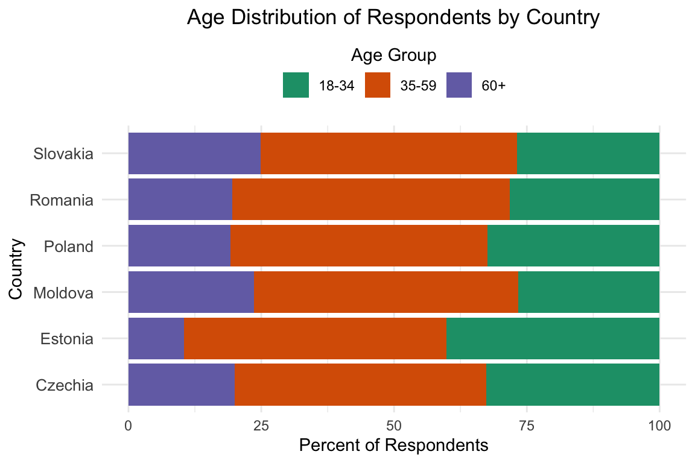
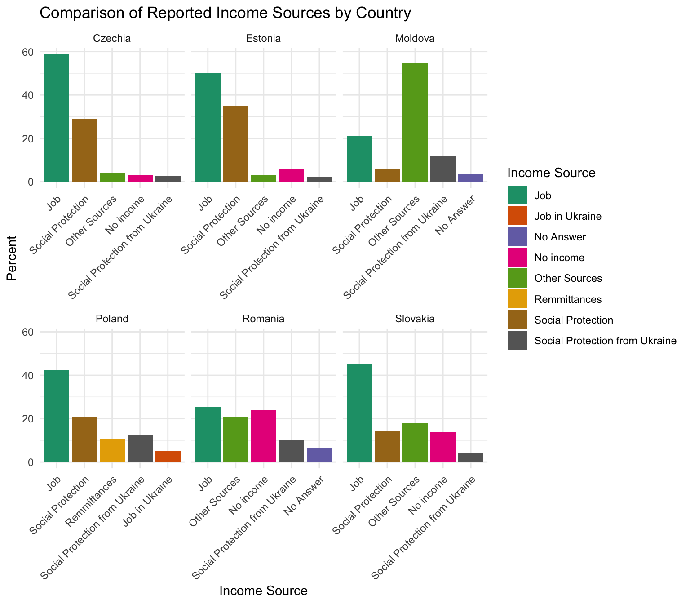

Key demographcic indicators of Ukrainian refugees in Estonia reveal that the majority of refugees are between 35 and 59 years old, closely followed by the 18-34 age group. Refugees aged 60 and older represent a minority of arrivals, indicating a younger to middle-aged demographic predominance. The largest wave of arrivals to Estonia occurred between March and April of 2022, with 45.68% of all arrivals within the period falling in this range. There are mild arrival peaks in May and July of 2022. 49.46% of arrivals hold a vocational and specialization education, followed by around 38% of refugees with Master or Bachelor degrees. People with secondary education are moderately represented, but there are very few people with PhD education. The largest group is employed, indicating that many refugees were active in the workforce before displacement. Other categories include students, self-employed, and those in housekeeping.
# Common theme for plotsgg <-theme_minimal() +theme(legend.position ="none",plot.title =element_text(size =10, face ="bold"),axis.title =element_text(size =8),axis.text =element_text(size =7) )# EDA plotse1 <-ggplot(data_ee, aes(x = introduction_resp_age, fill = introduction_resp_age)) +geom_bar(stat ="count") + gg +xlab("Age") +ylab("Count") +scale_fill_brewer(palette ="Paired")e3 <-ggplot(data_ee, aes(x = introduction_date_arrival, fill =as.factor(introduction_date_arrival ))) +geom_bar(stat ="count") +scale_fill_brewer(palette ="Paired") +xlab("Date of arrival") +ylab("Count")+xlim(as.Date("2022-01-01"), as.Date("2023-01-01")) +gg +theme(axis.text.x =element_text(angle =45, hjust =1))e4 <-ggplot(data_ee, aes(x =fct_infreq(demographics_educ_level), fill = demographics_educ_level )) +geom_bar(stat ="count") + gg +xlab("Education") +ylab("Count") +scale_fill_brewer(palette ="Paired")+theme(axis.text.x =element_text(angle =45, hjust =1))e5 <-ggplot(data_ee, aes(x =fct_infreq(demographics_resp_activity), fill = demographics_resp_activity)) +geom_bar(stat ="count") + gg +xlab("Activity status") +ylab("Count") +scale_fill_brewer(palette ="Paired")+theme(axis.text.x =element_text(angle =45, hjust =1))# Arrange all plotsgrid.arrange(grobs =list(e1, e3, e4, e5),ncol =2, nrow =2,top ="Bar Plots of Key Demographic Variables in Estonia Dataset")

Legal status and choice of country
While 55.76% of respondents experienced family separation, reunification with relatives was among the primary motivations for coming to Estonia. The remaining important reasons for choosing Estonia are language, its proximity, work opportunities, and cultural reasons.
# Choose top-5 reasons for choosing Estoniatop6 <- reasons_country_ee |> dplyr::arrange(desc(Total_Proportion)) |> dplyr::slice_head(n =5)# Reason for choosing Estonia graphggplot(top6, aes(x =reorder(Component, -Total_Proportion), y = Total_Proportion, fill = Total_Proportion)) +geom_bar(stat ="identity") + gg +xlab("What motivated you to come to this country?") +ylab("Count") +scale_fill_gradient(low ="lightblue", high ="darkblue") +theme(axis.text.x =element_text(angle =45, hjust =1))

Temporary protection is the predominant legal status covering around 50% of respondents. However, almost half of those who have taken the surey did not provide an answer, indicating possible administrative gaps or hesitation. The vast majority, over 92%, did not report having difficulties in accessing temporary protection, while only 3.24% faced obstacles.
# Function to create a clean proportion tablemake_prop_table <-function(variable) {tibble(Category =names(table(variable, useNA ="ifany")),Count =as.numeric(table(variable, useNA ="ifany")),Percent =round(100* (prop.table(table(variable, useNA ="ifany"))), 2) )}# Apply to each variable#Legal Status proportionslegal_status_table <-make_prop_table( data_ee$documentation_legal_status)#Difficulty in getting temp protectionlegal_diff_table <-make_prop_table( data_ee$documentation_temp_protection_difficulty) # Types of difficulties legal_diff_what_table <-make_prop_table( data_ee$documentation_temp_protection_difficulty_what)# View tableslegal_status_table
Over two thirds of refugees did not report having issues with accommodation. High rent appeared to be the main concern with one fifth of respondents experiencing the issue. Other problems include insufficient privacy and poor hygiene infrastructure, such as showers and toilets, but these options were chosen by less than 6% of respondents each.
# Function to create a clean proportion table# Choose top-5 reasons for accommodation issuestop5 <- housing_issues_df |> dplyr::arrange(desc(Total_Proportion)) |> dplyr::slice_head(n =5)top5$Issue <-rownames(top5)# Graphggplot(top5, aes(x =reorder(Issue, Total_Proportion), y = Total_Proportion, fill = Total_Proportion)) +geom_bar(stat ="identity") + gg +xlab("Proportion (%)") +ylab("Accommodation issues") +scale_fill_gradient(low ="lightblue", high ="darkblue")+theme(axis.text.x =element_text(angle =45, hjust =1))
School NA values were removed from columns related to childcare services, assuming that people who did not answer don’t have children. Among those who participated in this section, almost everyone had access to childcare services. The situation was different with healthcare service. 30% of people experienced some problems with healthcare services, among which two thirds reported long waiting times. 15% claimed having obstacles due to medical language, 12% due to absence of medical professionals, and 11% due to refusal.
# Remove NA values from childcare variable, assuming that NA respondents don't# have childrendata_ee_filtered <- data_ee |>filter(!is.na(host_country_childcare_services))# Create the bar chartggplot(data_ee_filtered, aes(x = host_country_childcare_services, fill = host_country_childcare_services)) +geom_bar(stat ="count") +xlab("Childcare Services") +ylab("Count") +scale_fill_brewer(palette ="Paired") + gg
Aid AAP_AAP_0_SS_SATISFIED_AID URGENT_NEEDS_URGENT_NEEDS_FIRST URGENT_NEEDS_URGENT_NEEDS_SECOND URGENT_NEEDS_URGENT_NEEDS_THIRD INFO_NEEDS_INFO_RECEIVE
Traveling back TRAVEL_UKRAINE_TEMP_RETURN TRAVEL_UKRAINE_TEMP_RETURN_REASON Reasons of going permanently to Ukraine TRAVEL_UKRAINE_NO_RETURN_PLANS TRAVEL_UKRAINE_NO_RETURN_MOVE_COUNTRY TRAVEL_UKRAINE_NO_RETURN_MOVE_REASONS